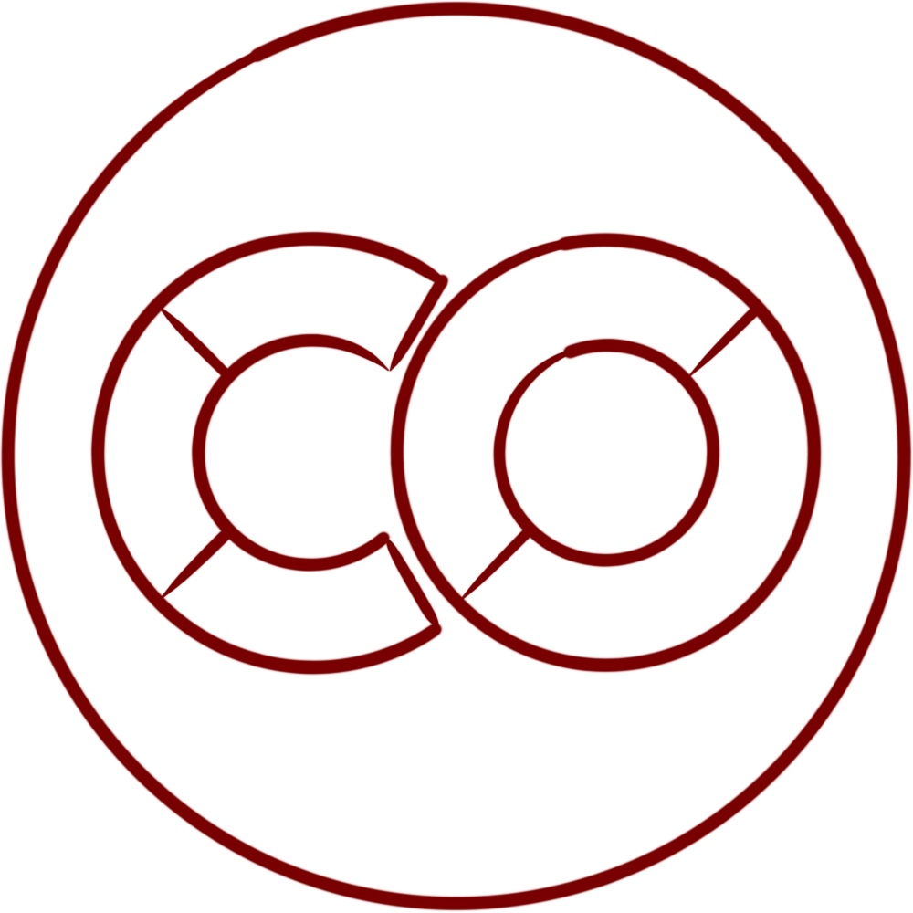
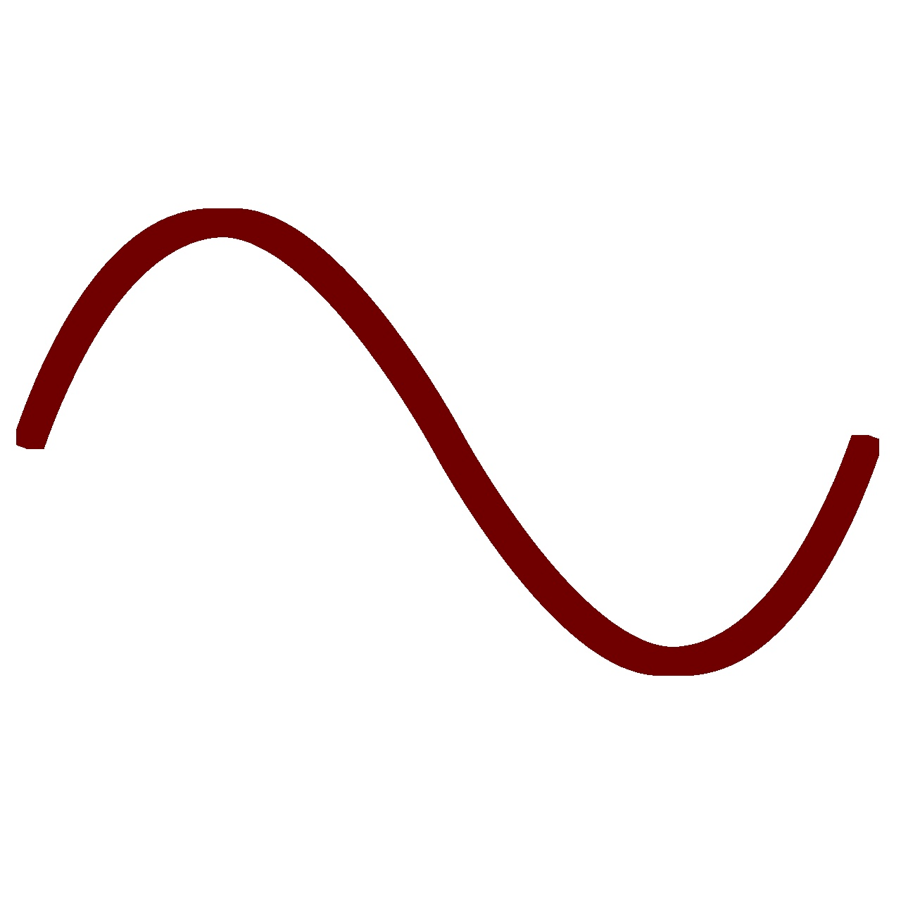
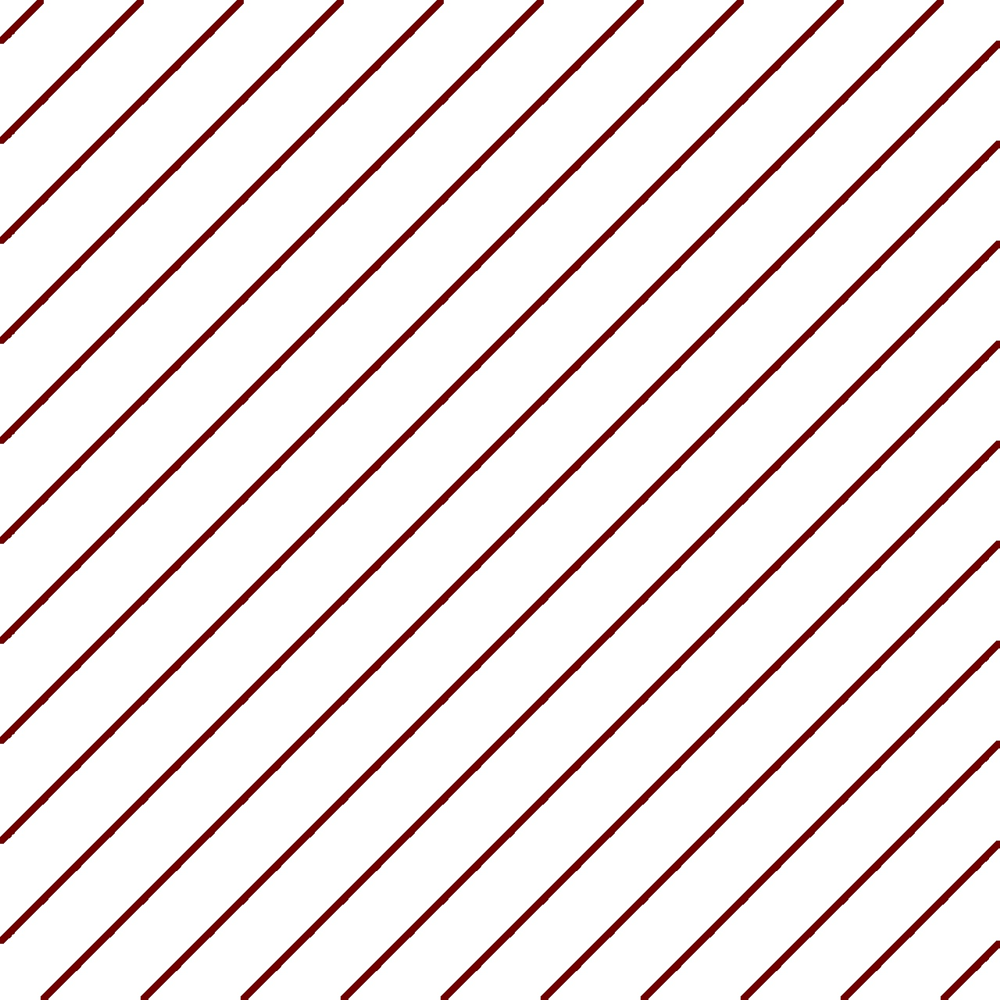

SIGNALTHEORIE

Google Colab ist eine cloud-basierte Entwicklungsumgebung, die eine umfassende
Python-Umgebung direkt im Webbrowser bereitstellt. Dadurch wird die lokale Installation
von Software oder Bibliotheken überflüssig, wodurch der Einstieg in die Programmierung
und Datenanalyse erleichtert und benutzerfreundlicher gestaltet wird.

Am Einheitskreis stößt man sehr schnell auf Sinus und Kosinus und erkennt, wie diese
beiden Funktionen sich bewegen. Wir interessieren uns genau deswegen dafür, weil Sinus
und Kosinus mit ihrer Wellenform für uns in der Signaltheorie die Bausteine sind, um
kompliziertere Funktionen zu bauen.

Die Faltung ist ein grundlegendes Konzept in der Signaltheorie. Wir benutzen sie zuerst,
wenn wir modellieren, wie ein System auf ein Eingangssignal reagiert. Faltung spielt
aber auch in praktischen Anwendungen eine wichtige Rolle, z.B. in der Bildverarbeitug.
Audacity ist ein Open-Source Softwareprojekt. Die Applikation ermöglicht es, Audiodaten
aufzunehmen oder zu erzeugen, zu bearbeiten und zu speichern. Dabei stehen viele
Funktionen zur Verfügung, mit denen wir uns (direkt oder indirekt) auch in der
SIGA-Vorlesung beschäftigen.
Die diskrete Fourier-Transformation (DFT) wird täglich milliardenfach in praktischen
Anwendungen genutzt. In der SIGA-Vorlesung beschäftigen wir uns mit den
zugrundeliegenden Konzepten, möglichen Problemen, möglichen Anwendungen und wie man die
DFT effizient implementiert.
Der gleitende Mittelwert ist eine einfache Technik, um eine Datenreihe zu glätten.
Zunächst könnte man meinen, dass dabei nichts Schlimmes passieren kann. Aber das ist
leider nicht so einfach! Unsere Methoden erlauben es uns, hier genauer hinzuschauen und
genau zu erkennen, was tatsächlich passiert. Schließlich werden wir begründen, welche
alternativen Filter besser geeignet sind.
Wenn analoge Signale digitalisiert werden, geschieht das durch zeitlich diskrete
Abtastung. Dabei können Probleme auftreten, wenn die Frequenz der Abtastung zu klein
ist. Das Abtasttheorem ermöglicht eine klare Einschätzung, ob in einem konkreten Fall
unerwünschte Effekte zu erwarten sind oder nicht. Seine besondere Bedeutung wird auch
dadurch sichtbar, dass es mit mindestens vier unterschiedlichen Entdeckern (Nyquist,
Shannon, Whittaker und Kotelnikow) zugeschrieben wird.
Leider sind bei der Analyse von Signalen in der Praxis nicht immer alle theoretisch
notwendigen Voraussetzungen erfüllt. Zu den typischen Fehlern gehört das Leakage, das
entsteht, wenn der Beobachtungszeitraum ungünstig gewählt wurde. Erfreulicherweise
können wir mit Hilfe unserer mathematischen Modelle auch hier nicht nur den Effekt
beschreiben, sondern auch mögliche Lösungen untersuchen.
Das Tierstimmenarchiv am Museum für Naturkunde Berlin umfasst 120.000 Tonaufnahmen von
Tieren. Das ist ein toller Datensatz, um unsere Konzepte und Werkzeuge in der Praxis
auszuprobieren. Im Praktikum programmieren Sie mit Python eine "KI"-Software, die
Tierarten anhand der Töne erkennen kann.
--- Inhalt folgt ---
--- Inhalt folgt ---
--- Inhalt folgt ---
Bildverarbeitung